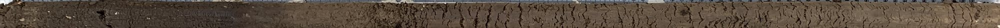
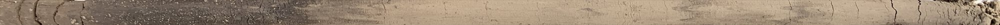
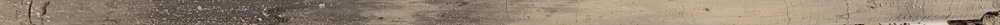
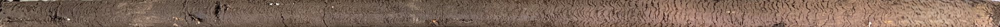
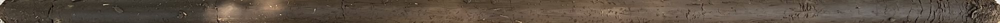
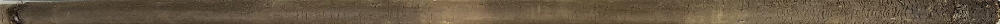
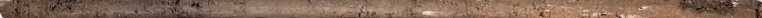

Interactive application to visualize the error and vertical distribution of soil moisture sensor layouts compared to in situ soil cores.
Profile depth
Sensor depths (cm)
Profile
Metrics
Relative error (this profile)
–
Signed error (this profile)
–
Mean relative error (all profiles)
–
Mean signed error (all profiles)
–
Select at least one sensor depth to see the estimated profile.
Reading the chart
Each reference profile comes from a 1-m soil core cut into 5-cm segments in the field. The tool simulates perfect sensor
readings at the selected depths and compares the soil moisture profile estimated from those few sensors against the full core.







0255075100 cm
Examples of the 1-m soil cores used as reference profiles. Cores are shown horizontally with the soil surface on the left and gridlines every 5 cm (the slicing interval). Click a label to show that profile in the tool above.
Observed (white line): volumetric water content (VWC) measured in the soil core, interpolated to 1-cm layers and plotted at the middle of each layer (0.5, 1.5, …, 99.5 cm).
Sensor (circles): the simulated sensor readings. Each one is the average of the observed 1-cm layers just above and below the sensor depth (e.g., a 5-cm sensor averages the 4–5 cm and 5–6 cm layers).
Layers (dotted line): each sensor represents the soil from halfway to the sensor above to halfway to the sensor below. The shallowest sensor extends to the surface and the deepest sensor extends to the bottom of the profile. Estimated storage is the sum of each sensor reading multiplied by the thickness of its layer.
Interp. (solid orange line): straight lines connecting the sensor readings, shown to help visualize the estimated profile. Above the shallowest and below the deepest sensor, VWC is held at the nearest sensor reading. This line contains exactly the same total storage as the Layers line.
±0.03 (shaded band, optional): typical sensor accuracy of ±0.03 cm³ cm⁻³ around the interpolated profile.
Error metrics
All metrics compare total water storage (mm) in the profile from the surface down to the selected bottom depth.
Relative error: size of the error for the selected profile, |Estimated − Observed| / Observed × 100. Lower is better.
Signed error: same, but keeps the sign, (Estimated − Observed) / Observed × 100. Positive values mean the sensors overestimate storage and negative values mean they underestimate it. Closer to zero is better.
Mean relative error and mean signed error: the same metrics averaged across all profiles. The mean relative error describes the typical size of the error of a layout; the mean signed error reveals whether a layout consistently over- or underestimates storage.
Example 1: Reasonable sensor distribution
Consider a profile depth of 50 cm with sensors placed at 5, 20, and 40 cm.
The depth intervals represented by each sensor are defined as follows:
5 cm sensor → represents soil from 0 to 12.5 cm
20 cm sensor → represents soil from 12.5 to 30 cm
40 cm sensor → represents soil from 30 to 50 cm
In this configuration, 12.5 cm and 30 cm are the midpoints between the sensor locations. The deepest sensor (40 cm) captures the lower portion of the profile and the estimated profile reproduces both the vertical distribution of soil moisture and
total storage reasonably well across the entire 0–50 cm depth.
Example 2: Poor sensor distribution
Now consider the same 50-cm profile, but with sensors placed at 5, 10, and 20 cm.
The resulting depth intervals are:
5 cm sensor → represents soil from 0 to 7.5 cm
10 cm sensor → represents soil from 7.5 to 15 cm
20 cm sensor → represents soil from 15 to 50 cm
In this case, the sensor at 20 cm is used to represent the entire 15–50 cm portion of the profile. Because no sensor
is located below 20 cm, the estimated soil moisture below that depth is assumed to be uniform and equal to the value at 20 cm. This
typically leads to a poor representation of deeper soil moisture conditions.